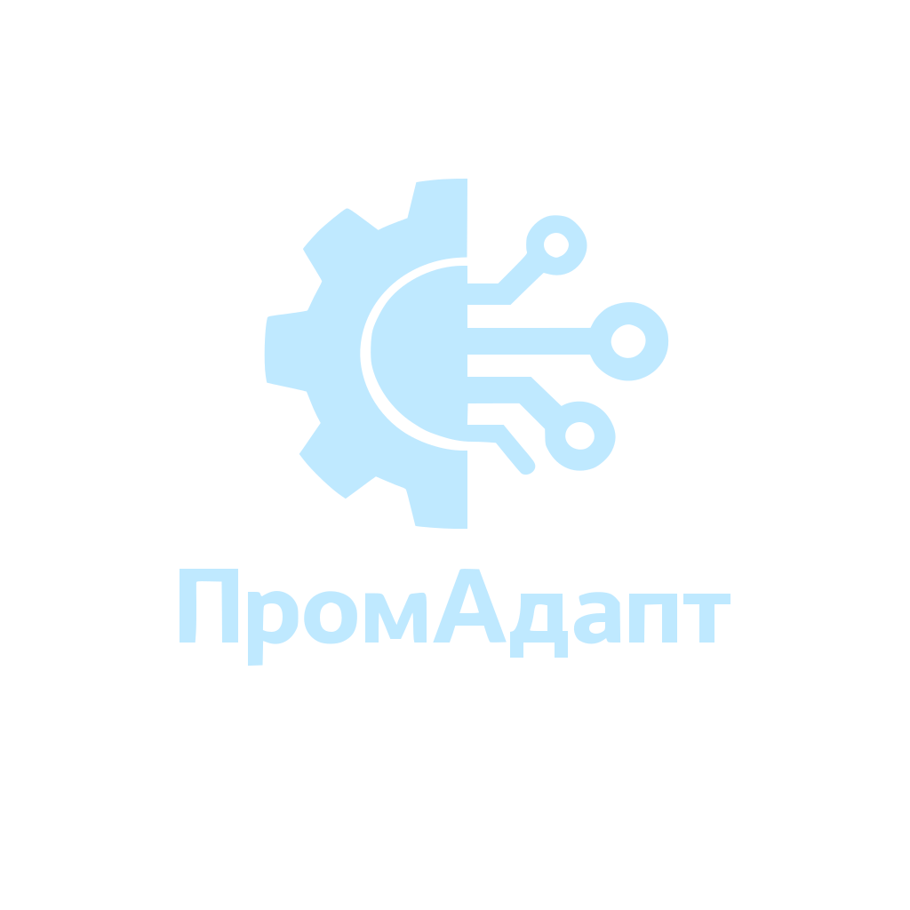

От непонятного пульта — к полной картине загрузки и потерь по всему производству.
71% импорта станков в Россию — китайские. Мы делаем так, чтобы они работали как родные.

Оборудование купили — но оно не встроено в производство. Потери есть, но их никто не считает.
Оператор тратит 15-40 минут за смену на разбор иероглифов. Мастер учит «методом тыка».
Нового сотрудника не обучить, проверку не пройти, ТО делается когда уже сломалось.
Мастер говорит «всё нормально», а заказы срываются. Реальной загрузки никто не видит.
Делаем две вещи: адаптируем оборудование под людей и подключаем производство к данным.
Делаем станок понятным для оператора и готовым к включению в общую инфраструктуру предприятия.
Русифицируем экран управления и, если нужно, переписываем программу станка под ваш техпроцесс.
Готовим полный комплект эксплуатационных материалов: инструкции, схемы, карты обслуживания и режимы работы.
Убираем ограничения заводского софта и настраиваем логику работы оборудования под реальные задачи цеха.
Пишем драйверы под открытые и закрытые протоколы и подключаем станок к общей системе предприятия.
Подключаем оборудование к данным и собираем вокруг него рабочую цифровую среду для цеха и руководства.
Разрабатываем шлюзы и подключаем к системе как новые, так и старые станки без замены парка.
Показываем состояние оборудования, события, простои и автоматически уведомляем о сбоях.
Собираем экраны под операторов, инженеров и руководителей, включая диспетчерское управление.
Строим аналитику по износу, потерям и эффективности и передаём данные в 1С, ERP и управленческую отчётность.
Не поток цифр, а ответ на вопрос: где я теряю деньги и сколько.
Реальная загрузка, а не устный отчёт мастера на планёрке.
Где именно уходит время, на каком оборудовании и в какую смену.
Себестоимость, планирование выпуска, приоритеты ТО — всё на данных.
Подходим от оборудования, а не от платформы. Сначала смотрим что есть — потом подбираем способ.
Смотрим интерфейсы, контроллеры и экраны управления. Определяем, что можно снять сразу, а где нужен отдельный способ.
Если станок уже отдаёт данные, снимаем их напрямую с контроллера или экрана управления.
Если прямого доступа нет, ставим внешний съём без вмешательства в станок и без остановки производства.
Все данные остаются внутри предприятия. Ничего не уходит наружу.
Работаем с открытыми, закрытыми и нестандартными интерфейсами. Если типового подключения нет, разбираем обмен данными и находим рабочий способ.
Подключаемся к любым доступным интерфейсам: контроллерам, экранам управления, сервисным портам и внутреннему обмену данными.
Если готового решения нет, разбираем протокол и при необходимости разрабатываем собственный драйвер подключения. Поэтому проект не упирается в модель станка.
Данные с оборудования работают не сами по себе, а в связке с вашей инфраструктурой.
Выработка, простои и состояние оборудования автоматически попадают в ваши базы данных и учётные системы, в том числе 1С. Без двойного ввода и ручных отчётов.
Все станки, линии и участки — в одном месте. История за любой период, доступ по ролям.
Обмен данными с ERP, MES и другими системами. Платформа не становится «ещё одним островом».
Директор видит всё предприятие, главный инженер — оборудование, мастер — свой участок.
Пример: китайские этикеточные станки с закрытым PLC-контроллером, проприетарным протоколом и подключением через COM-порт.
Этикеточные станки китайского производства.
PLC-контроллер, проприетарный протокол, COM-порт.
Русский интерфейс, интеграция с 1С и полная эксплуатационная документация.
PLC / COM-порт -> драйвер на Rust -> API -> русский веб-интерфейс, 1С и мониторинг.
Не абстрактная цифровизация. Конкретная задача — конкретный результат.
Работаем с контроллерами и интерфейсами, которые типовые платформы мониторинга не поддерживают.
Если оборудование не отдаёт данные стандартным способом — разбираем протокол и подключаем. Там, где другие останавливаются, мы находим решение.
От русификации пульта до дашборда с OEE. Не нужно собирать трёх подрядчиков и стыковать их между собой.
Разработано на языке, созданном для систем, где сбои недопустимы. Используется в авиации, автопроме и критической инфраструктуре. Не зависнет и не уронит сбор данных посреди смены.
Начинаем с малого. Масштабируем только после того, как вы увидите эффект.
По итогам пилота вы принимаете решение о масштабировании на основе данных вашего производства, а не обещаний.
Первый шаг занимает один день. Дальше решение принимается уже на фактах.
Шильдик оборудования и пульт оператора — этого достаточно для первой оценки.
За день говорим, что можно сделать: русификация, подключение, мониторинг — и сколько это стоит.
Подключаем 3-5 единиц, показываем результат. Вы решаете — масштабировать или нет.